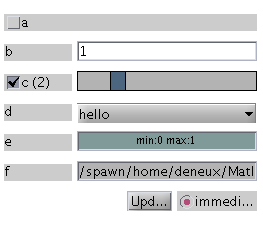

fn_control
Arrangement of control buttons that reflect the state of a set of parameters
fn_control transforms a structure s into a fn_control object X based on s and displays controls in a figure or a uipanel. The control actions are to modify the values in X, and inversely, modifying the values in X changes the control displays.
Contents
Syntax
X = fn_control(s[,spec][,fun][,hparent][,'okbutton|nobutton') fn_control demo
Input
- s structure to intialize X
- fun function with prototype @(s)fun, which will be called
by X
- spec structure with additional information on the aspect and
behavior of the controls (see below); it should have
the same fields as s (though some fields can be
omitted)
- hp parent figure or uipanel where to create the controls
(a new figure is created if not specified)
- 'okbutton' or 'nobutton'
specifically specify to have an ok button or no buttonOutput
- X a fn_control object, which can be manipulated using
usual structure syntaxPossible values for the fields of spec:
[] automatic guess how to display the control
'logical' check box
'multcheck [n]' array of n check boxes
{'str1','str2',...}
list box with specified string values
{'list|radio|button' 'str1','str2',...}
specification of the type of display [default: list]
for a choice between string values
'char [n [nlin]]'
input for string, if n is specified, sets the minimal
length of the input in number of characters, otherwise,
minimal length is set according to the value in s
if nlin is specified, control occupies nlin lines
instead of 1
'double [n]' input for numerical array
'single [n]' input for numerical array
'slider min max [step] [format]'
slider, specify min, max, step (optional) and format of the
string representation (optional)
'logslider min max [step] [format]'
logarithmic scale slider (min and max should be the log of
the effective min and max)
'loglogslider min max [step] [format]'
logarithmic scale slider, with possibility to select
also a negative number
'stepper [n [min [max [step [format]]]]]'
input for n double
if n>1, it is possible to define n values for min, max,
step, separated by commas, for example: 0,-Inf,-1
'clip' input for 2-elements vector (usually, min and max);
move the mouse in the control area to change the value
'xdouble, xsingle, xchar [n], x[log[log]]slider min max [..],
xstepper, xclip'
additional display of a check box: value will be empty
if the box is not checked
it is possible to specify a default value inside
brackets at the end of the flag, for example:
'xchar 12 [yes we can]' (here the brackets do not mean
that this default value is optional, but they must
appear in the string)
'file|dir' button for selecting file name / directory nameExamples
Copy-paste the code below or run fn_control demo for a simple example.
s = struct('a',false,'b',1,'c',2,'d','hello','e',[0 1],'f',pwd); spec = struct('c','xslider 0 10 1','d',{{'hello','yo'}},'e','clip','f','dir'); myfun = @disp; fn_control(s,spec,myfun);
Run fn_movie demo for a more elaborate usage.
See also
Source
Thomas Deneux
Copyright 2007-2012